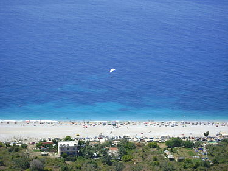
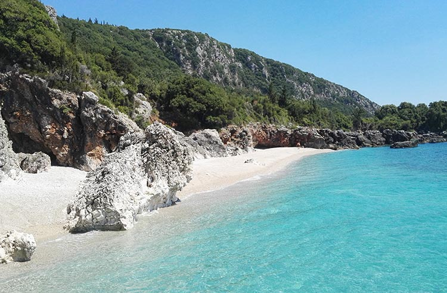

Dhërmi is a village in Vlorë County, Albania. It is part of the municipality of Himarë. The village lies 42 kilometers south of the city of Vlorë and about the same distance north of the southern city of Sarandë. It is built on a slope of the Ceraunian Mountains at approximately 200 meters in altitude, and comprises three neighborhoods: Gjilek, Kondraq, and Dhërmi itself. The mountains descend to the southwest into the Ionian coast and Corfu in the distance to the south. Nearby is the village of Palasë. The inhabitants of Dhërmi mainly speak a variant of the Greek Himariote dialect, characterized by archaic features not retained in standard Greek. Recently, the coastal area has seen a boom in the construction of accommodation facilities, such as wooden villa complexes.
The foundation of the village is lost in history. Around 1627-1633 a Greek-language school was founded in Dhërmi. Additional Greek schools operated by 1682 with the support of the local bishopric of Himara. During the 17th century (precise year is unknown) another Greek school (the Vizilios School) opened under the sponsorship of a local benefactor. In the 1898-1899 school season three Greek schools were operating: elementary, secondary and a girls' school. At November 5, 1912, when the nearby town of Himara was controlled by the Greek forces of the local major Spyros Spyromilios, armed groups from Dhermi declared that they were prepared to assist his movement for the incorporation of the rest of the region into Greece.
Thank you for reading this article! Leave a like or dislike.